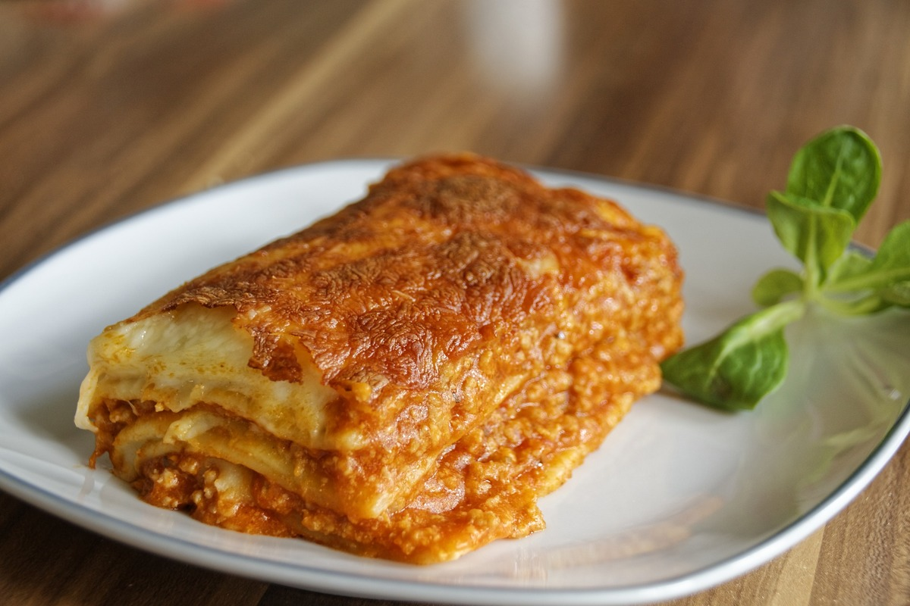

Home
Italian Lasagna

Description
A timeless recipe for Lasagne al Forno, the beloved Italian beef lasagna made completely from scratch. Few dishes are as comforting as a hot, golden pan of lasagna layered with rich homemade beef ragù, creamy béchamel, tender fresh pasta sheets, and a blanket of melted mozzarella.
This classic Italian dish is guaranteed to become a go-to comfort favorite.
Ingredients
Ragu
- 1 tbsp olive oil
- 1 cup carrot, finely chopped
- 1 cup stalk celery, finely chopped
- 1 cup white onion, finely chopped
- 1 lb ground beef
- 1 lb ground pork
- 2.5 cups Passata (tomato puree US)
- 3 tbsp tomato paste
- 1 cup red wine
- 6 cups beef stock
- 2 bay leaves
- 1 tsp sea salt flakes and pepper
White Sauce
- 5 tbsp butter
- 5 tbsp all-purpose flour
- 4 cups full-fat milk
- 1/2 tsp nutmeg
- 1 cup parmesan, freshly grated
- 1 tsp sea salt and pepper, or to taste
Lasagne
- 1 lb fresh lasagna pasta sheets
- 2 balls mozzarella
Steps
Ragu
- Finely dice the carrot, onion, and celery, then gently sauté them in a large pan with olive oil until softened. Stir in the ground beef and pork and cook until the meat is browned.
- If the mixture releases too much fat, carefully spoon some out. Pour in the red wine and simmer until it has reduced by half.
- Once the wine has cooked down, mix in the passata, tomato paste, bay leaves, 4 cups of beef stock, and a pinch of salt and pepper.
- Combine well and let the sauce gently simmer uncovered for 2.5–3 hours over low heat. Add the remaining beef stock halfway through cooking.
White Sauce
- Melt the butter in a saucepan until it becomes foamy.
- Add the flour and stir to create a smooth paste. Cook for about a minute to remove the raw flour taste.
- Gradually whisk in half of the milk, stirring constantly so no lumps form. Once the mixture begins to thicken, add the remaining milk, nutmeg, parmesan, and a little salt and pepper.
- Keep stirring over low heat until the sauce thickens enough to coat a spoon. Remove from heat and set aside.
Assemble the lasagne
- Preheat your oven to 350°F (180°C).
- Start assembling the lasagna by spreading a thin layer of ragu across the bottom of your baking dish. Place a layer of lasagna sheets over the sauce.
- Spoon more ragu over the pasta so it is fully covered, then top with a generous amount of white sauce.
- Continue layering pasta, ragu, and béchamel until everything is used, keeping enough béchamel for the top layer. Aim for 4–5 layers of pasta.
- Tear the mozzarella into pieces and scatter it over the final layer. Bake for about 45 minutes, or until the top is golden and bubbling.
- Allow the lasagna to rest for 5–10 minutes before slicing and serving.